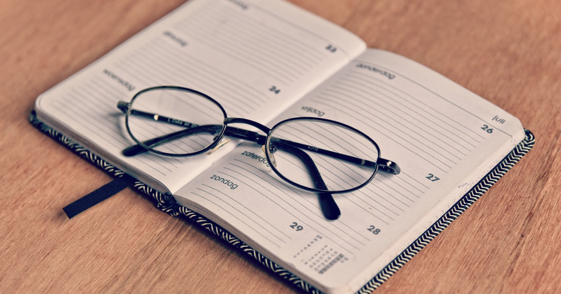

Habits for College:
It’s important to form good study habits for college early on so that you don’t fall behind when faced with more challenging or time-consuming readings, subject material, and exams. Make these six study habits a part of your regular routine and you’ll start off your college experience on the right foot.
1. Find a Place to Study Regularly
Consistency is key when it comes to studying, so do your best to make a habit of it! It’s a good idea to find a spot on campus where you feel comfortable and inspired to dive into a successful study session.
The environment should be whatever works best for you—whether that means having complete silence, some light background music, or a more lively atmosphere. Give it some thought and try out a few different spots. The sooner you find the space that works for you, the sooner you’ll be able to study effectively.
2. Keep Track of Deadlines and Important Dates
You might have the best of intentions when buying a new planner, but to really make the most of it, you should be sure to review it every day and write down due dates for assignments, exams, and other important events. Keeping track of what you need to study for can help you stay ahead of crucial projects and develop good study habits for college.
You can get ahead of upcoming assignments by checking your calendar on a weekly (and daily) basis, outlining each deadline in advance, and blocking off time to study. And don’t forget the best part of keeping a list of tasks—crossing them off once they are completed!
3. Don’t Cram for Your Exam
If you follow the previous tip, you likely won’t find yourself in a difficult situation, but it’s worth repeating: Remember to schedule your study time wisely to make the most of it. Studies show that reviewing material in smaller chunks of time—over a longer time span—is more effective than trying to cram a ton of material into one session. Slow and steady wins the race.
If you follow the previous tip, you likely won’t find yourself in a difficult situation, but it’s worth repeating: Remember to schedule your study time wisely to make the most of it. Studies show that reviewing material in smaller chunks of time—over a longer time span—is more effective than trying to cram a ton of material into one session. Slow and steady wins the race.
4. Organize a Study Group
Studying on your own works well for many subjects, but it also might be easier to learn the material if you can bounce ideas off of your classmates. During your first year at college, give group study sessions a try. There’s a good chance your fellow students will be interested in getting together to review course materials. You might discover a new way to study while also making a few new friends!
5. Review Your Notes After Class
Taking notes during the lecture is a study habit you might already be used to, but do you take the time to review those notes after class? If not, consider reviewing your notes later the same day. Going over your notes after seeing the material in class will improve your memory and can help you more effectively learn the material.
6. Ask for Help
When you arrive at college, you’ll find a team of professors and advisors who are there to help you succeed. It’s normal to find a class challenging at times, but don’t feel like you have to face it alone.
Everyone needs help at some point—and it’s better to reach out as soon as you think you need it rather than let yourself fall behind. Reach out to tutoring services, your professor, or an advisor if you don’t understand the material or need extra assistance in adjusting to college academics.
Extra Information at Origonal Post: www.apu.edu
Time Management:
You’re not alone in attempting to balance a chaotic schedule in earning your degree. According to a 2015 study conducted by Georgetown University, 40 percent of students ages 16–29 and 76 percent of students ages 30–54 years old work while in school. As you might imagine, if you’re a student with competing priorities, it’s incredibly important to focus on time management in college.
1. Record all due dates and deadlines
Say you’re sitting in class ready to leave when the teacher makes an announcement. There’s homework due in three days and an exam in one week. As you leave class, you make a mental note to remember those days.
Holley recommends going through course calendars and syllabi at the beginning of the semester and writing down all the important dates. Knowing what’s coming up will help you better prepare.
2. Create a routine
Getting into a routine can reduce uncertainty about when and how you will fit in homework and study time on top of school and work. Create a routine at the beginning of the semester so you can adjust to it early, and then see if you have leftover time for other engagements.
3. Use your tech for good
With millions of apps and games at your fingertips, your smartphone can seem like more of a time waster than a time manager. However, with some self-discipline, you can transform your phone or mobile device into an on-the-go calendar and scheduler. Set reminders to help you keep due dates and other important commitments in mind as you go through your day. Apps can be helpful too, with project management and productivity apps like Trello® serving as digital to-do lists.
4. Pomodoro® Technique
Invented by an Italian developer named Francesco Cirillo, this technique is named after the tomato-shaped kitchen timer Cirillo used to time his sessions (pomodoro is the Italian word for tomato).
“The Pomodoro technique is like a high intensity-interval training (HIIT) workout,” explains Irvine. “First, you choose the task you would like to work on, set a timer for 25 minutes and begin working on the selected task with no distractions. Once the timer goes off, set a timer for 5 minutes and take a break. Repeat these steps as many times as your like.”
5. Take note-taking to the next level
Many of us take notes during lectures but leave it at that. Frank Buck, educational consultant at Frank Buck Consulting Inc, suggests students try thinking of their lecture notes as more of a rough outline or first draft.
Re-copying and re-organizing those notes will increase your retention and understanding of new concepts. While doing this, you also pause to consider anything that didn’t make sense during the original lecture.